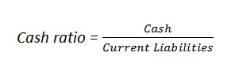

The cash ratio is the ratio of a company's total cash and cash equivalents (CCE) to its current liabilities. The metric calculates a company's ability to repay its short-term debt; this information is useful to creditors when deciding how much debt, if any, they would be willing to extend to the asking party. The cash ratio is generally a more conservative look at a company's ability to cover its liabilities than many other liquidity ratios because other assets, including accounts receivable, are left out of the equation. It is expressed as follows:
Examples (choose from the list or add a new one):
{% if form %} {% else %}| Year | Cash | Current liabilities | Cash ratio |
| {{ cr.year }} | {{ cr.cash }} | {{ cr.current_liabilities }} | {{ cr.cash_ratio }} |